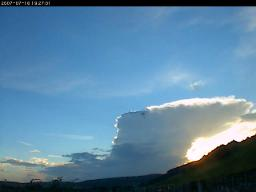

THE NERC MST RADAR FACILITY AT ABERYSTWYTH
THE NERC MST RADAR FACILITY AT ABERYSTWYTH
The Facility has created time-lapse videos of some of the more-interesting atmospheric phenomena seen by its Sky-Camera. These are intended for educational and outreach purposes and so have been published under a Creative Commons Attribution 4.0 International license. This means that anyone may use them for any purpose, so long as they give appropriate credit to the original. Moreover, anyone may make their own videos by accessing the archive of Sky-Camera images. An event log of potentially interesting periods is available.
For an explanation of the phenomena seen in these videos, download the resource available at http://docs.ceda.ac.uk/1259/.
More videos will be added by early 2017.
|  |
Start datetime: 2007-07-16 18:40 UTC Description: A rapidly-growing Towering Cumulus cloud, which develops an Anvil. Download from http://docs.ceda.ac.uk/1271/ |